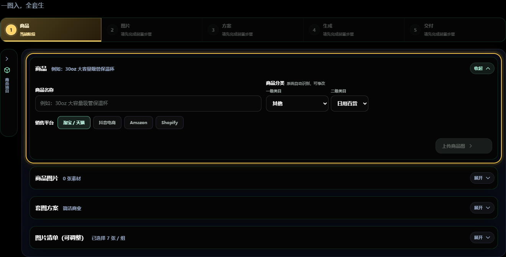
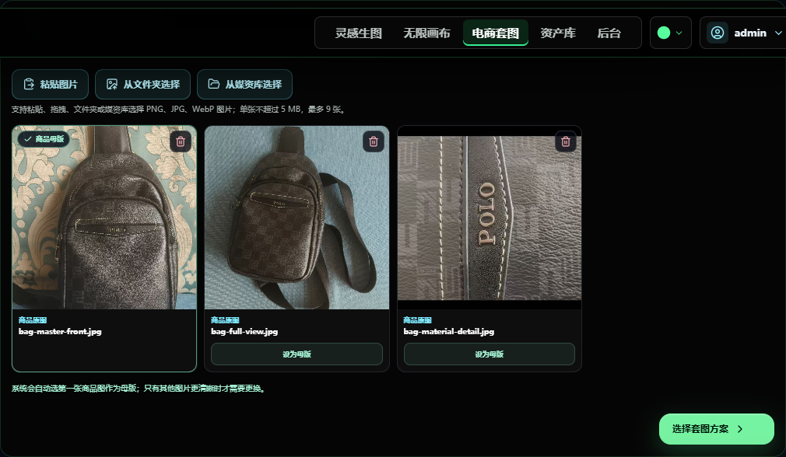
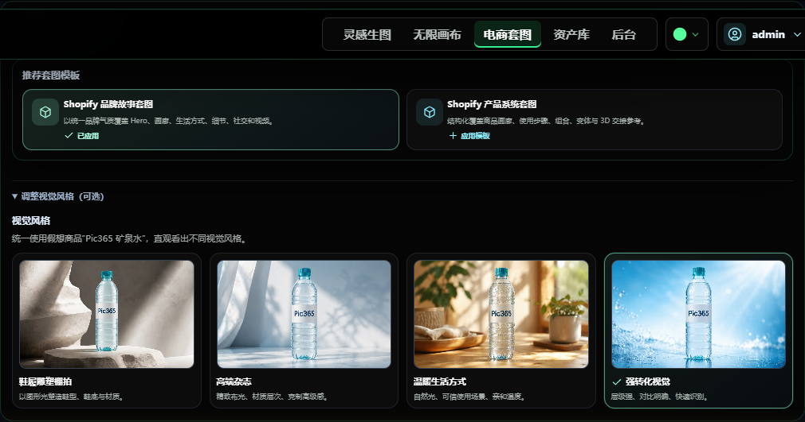
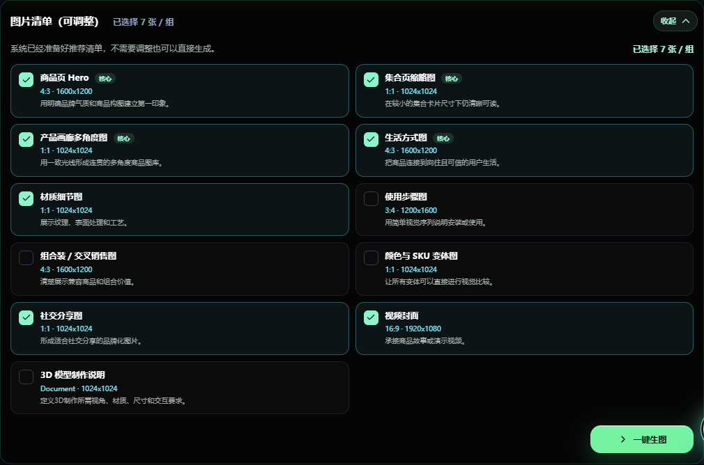
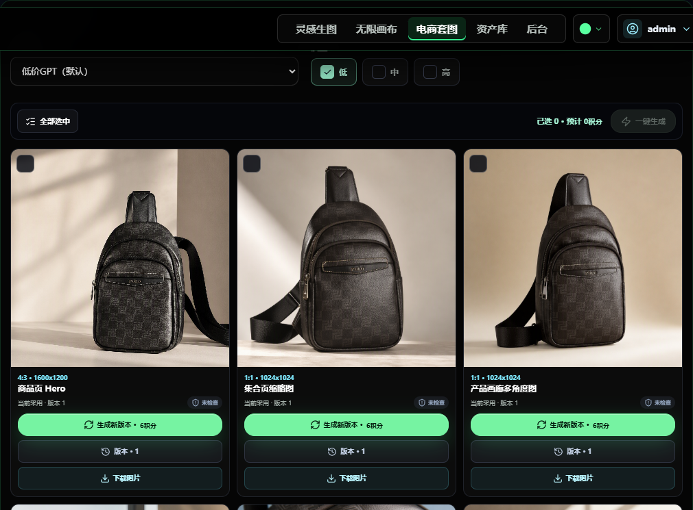
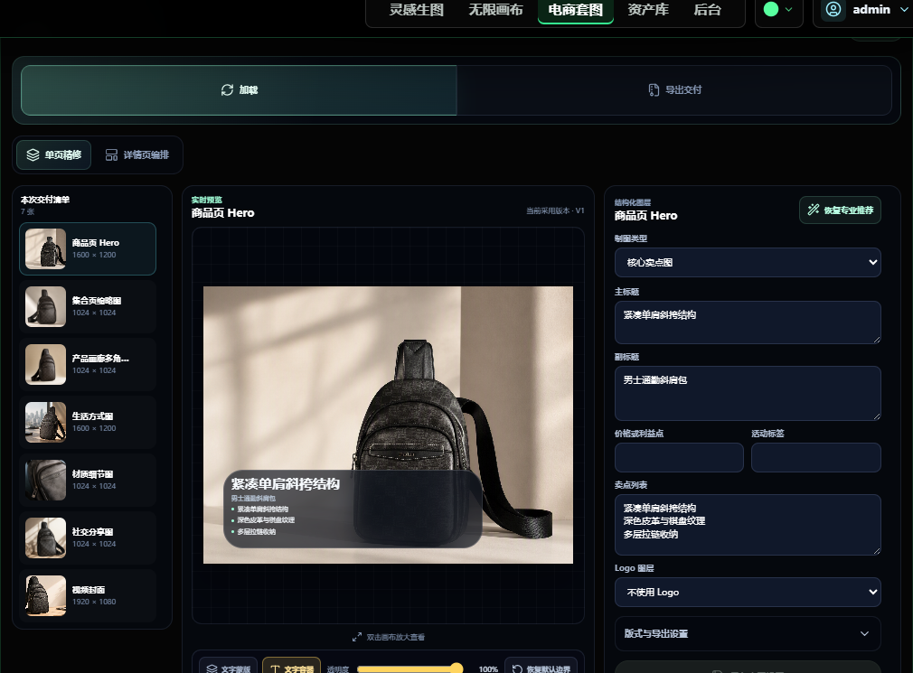

新建或打开项目
左侧项目列表用于切换、折叠和管理项目。新建后先填写清晰的商品名称，系统会自动保存基础项目。
围绕同一件商品，按“商品—图片—方案—生成—交付”五个阶段完成一套统一的商城视觉资产。
产品名称是项目保存和后续操作的基础。系统可识别商品类别，但用户仍应核对分类、子类和销售平台。

左侧项目列表用于切换、折叠和管理项目。新建后先填写清晰的商品名称，系统会自动保存基础项目。
检查自动识别的品类、子类和销售平台。分类会影响推荐模板、画面比例和镜头清单，不准确时应手动修正。
切换阶段或开始生成前，先确认没有“未保存”提示。未保存改动可能阻止生成与交付。

支持上传、粘贴和从资产库选择。优先准备正面、侧面、背面、细节、包装和 Logo 等互补角度。
母版应完整、清晰、遮挡少。它负责锁定商品轮廓、材质、颜色、包装、配件和关键标识。
辅助角度用于确认母版看不到的结构与细节，不应与母版展示不同款式、颜色或配件。
系统可以提取商品身份规则，但品牌字样、小尺寸标识、纹理和配件数量仍要人工检查并修正。


| 决策 | 检查问题 | 建议 |
|---|---|---|
| 销售平台 | 用于独立站、国内电商还是社交媒体？ | 先定渠道，再定比例和版式 |
| 视觉风格 | 是否符合商品价位、目标人群和品牌气质？ | 整套尽量只选一个主风格 |
| 镜头用途 | 首图、细节、场景、集合页、分享图是否齐全？ | 只勾选真正需要的交付项，减少无效生成 |
| 商品真实性 | 哪些结构、文字、Logo、材质不能改变？ | 写进商品身份规则，并在生成后逐张核对 |


检查生成服务、参考图支持能力和费用。可以批量生成选中镜头，也可以逐个镜头生成或重试。
检查轮廓、材质、颜色、Logo、配件数量和功能结构。构图漂亮但商品身份错误的图片不能直接采用。
同一镜头可保留多个版本。只有点击“采用”的版本进入交付集合；已确认版本可锁定，避免误替换。
返修时只描述需要改变的部分。交付区可进一步处理文案、遮罩、版式和导出，最后按渠道规格检查。
通常是商品项目尚未保存、图片尚未上传、母版未选定，或前一阶段还有未保存改动。
界面会保留失败状态与错误原因。先检查渠道、参考图数量/格式和任务参数；积分退回以任务记录提示为准。
固定同一母版与身份规则，辅助图不要互相冲突，统一视觉方案，并逐个镜头进行商品事实核对。